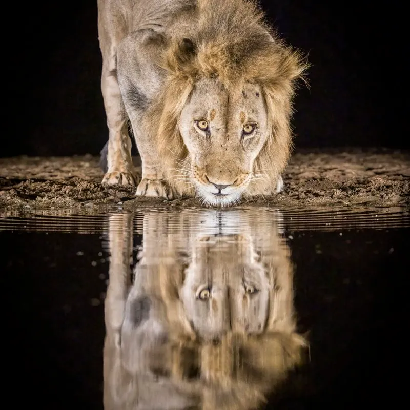
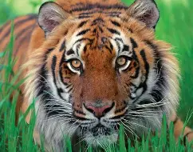
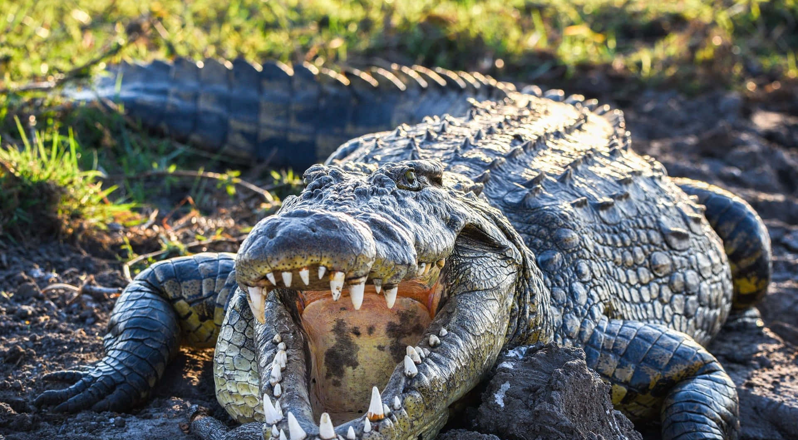
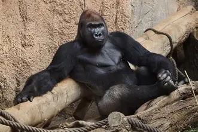
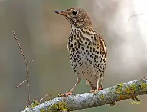

León

León y su rugido característico.
Tigre

Tigre y su rugido característico.
Cocodrilo

Cocodrilo y su sonido característico.
Gorila

Gorila y su rugido característico.
Zorzal

Zorzal y su canto.